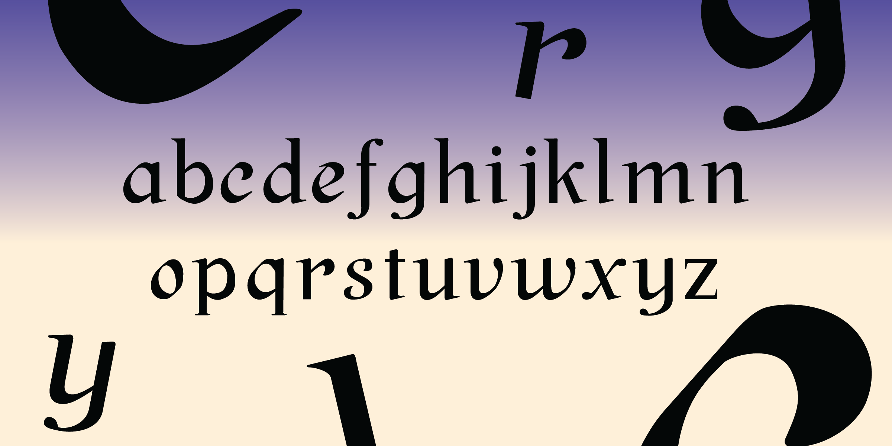
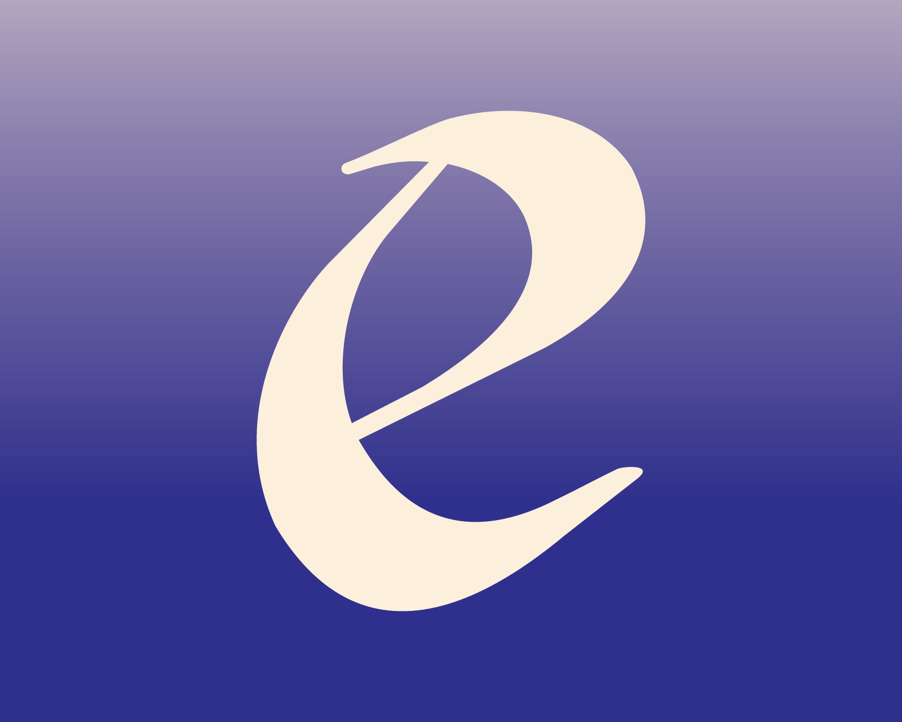
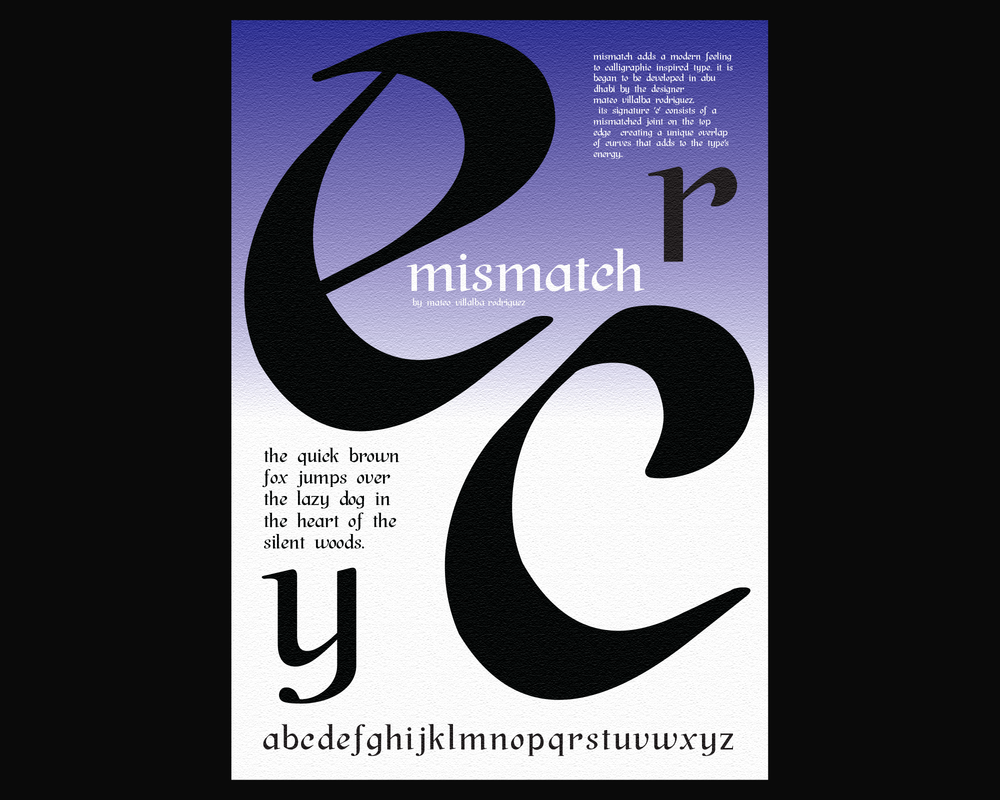

MisMatch
May 2023
Type Design
This was a project for Types of Art, a course taught by Goffredo Puccetti.
MisMatch is a typeface inspired by an accident in my calligraphic practice, in which the letter ‘e’ developed a mismatched joint on its top edge. Although the style of the type is visually traditional and script-like, the energy created by the mismatched joint adds a modern touch to this style.
At the moment, the typeface is still a work in progress. For this reason, only lower-case glyphs are shown.

When creating the typeface, I made all the other letters based on the letter ‘e’. Yet not all the letters have the mismatched joint; instead, they mimic the sudden angle shift in the mismatched joint. In this sense, this ensures the type, when together, does not become too overwhelming to the reader.

